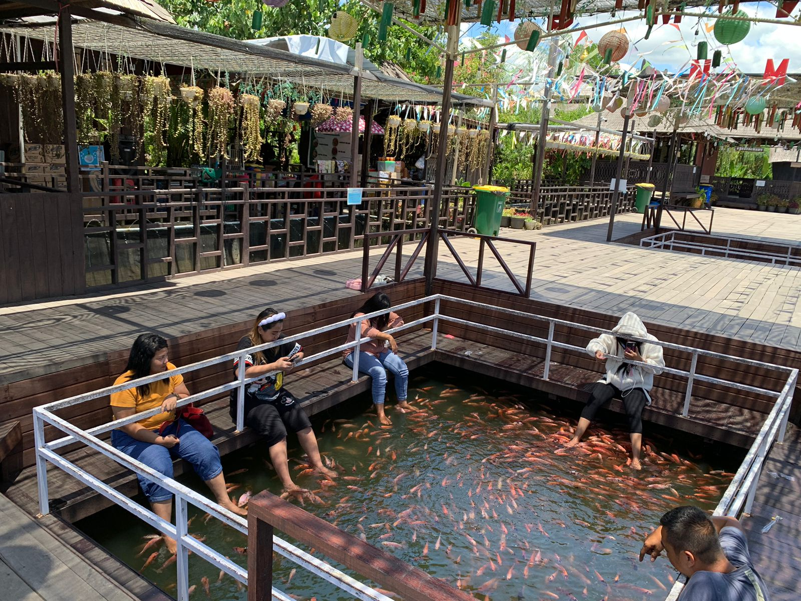
Gratis
Terapi ikan
Naureen Mini Garden menyediakan pengalaman bermain bersama ikan nila merah yang bermanfaat untuk relaksasi.
Lihat terapi ikan berbayar
Sebuah jeda hijau di Samarinda
Rencanakan hari yang lebih santai di Naureen Mini Garden, destinasi wisata taman di Samarinda, Kalimantan Timur.
Naureen Mini Garden adalah destinasi wisata taman di Samarinda, Kalimantan Timur. Sebuah ajakan untuk menikmati suasana hijau, mengambil jeda dari rutinitas, dan menghabiskan waktu dengan cara yang lebih santai.
Mulai rencanakan kunjungan02 / Nikmati suasananya
Hari yang menyenangkan tak selalu harus penuh rencana. Mulai saja dengan udara terbuka dan waktu yang terasa milikmu.
Luangkan waktu untuk relaksasi atau menikmati pengalaman memancing di Naureen Mini Garden.

Gratis
Naureen Mini Garden menyediakan pengalaman bermain bersama ikan nila merah yang bermanfaat untuk relaksasi.
Lihat terapi ikan berbayarAktivitas danau
Sewa alat pancing seharga Rp30.000 dan umpan Rp10.000. Pengunjung dapat memancing di area danau yang telah disediakan. Ikan hasil tangkapan boleh dibawa pulang tanpa ditimbang.
Rencanakan kunjunganYuk kunjungi area baru dan coba permainan seru bersama keluarga, teman, dan sahabat di Naureen Mini Garden.
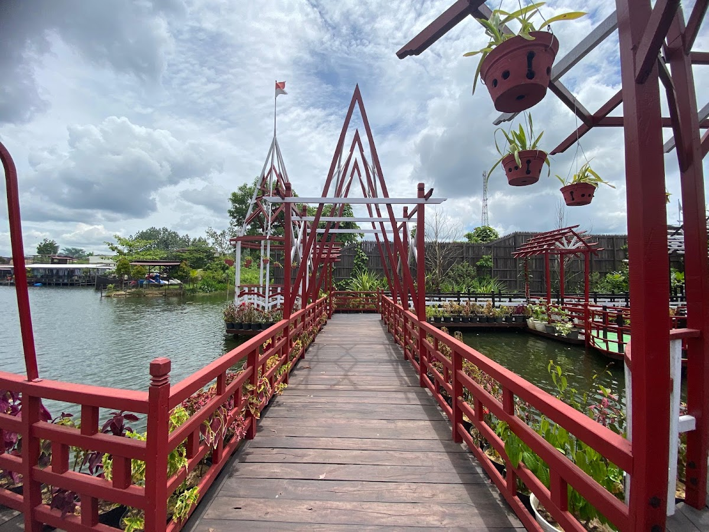
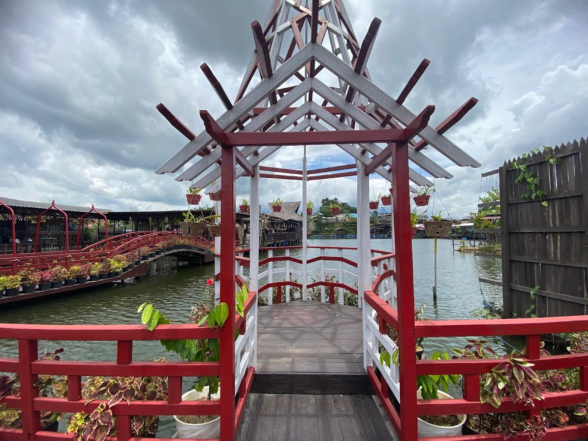
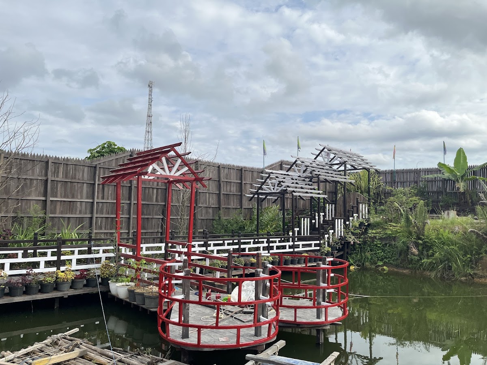
Spot foto · Pemandangan alam
Nikmati pemandangan alam dari jembatan terbaru di NMG yang menjadi salah satu spot foto favorit pengunjung.
Rp5.000 / orang · tiket masuk spot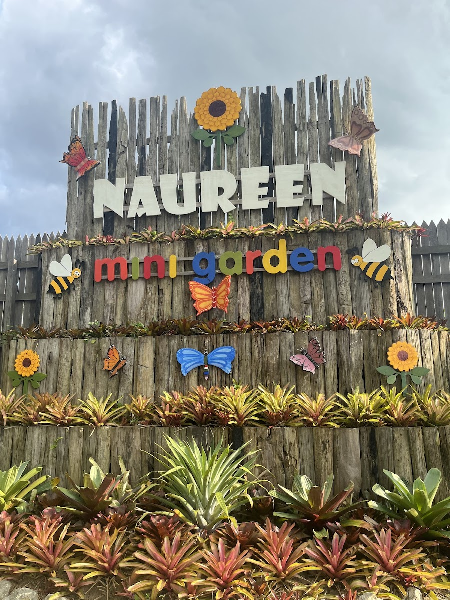
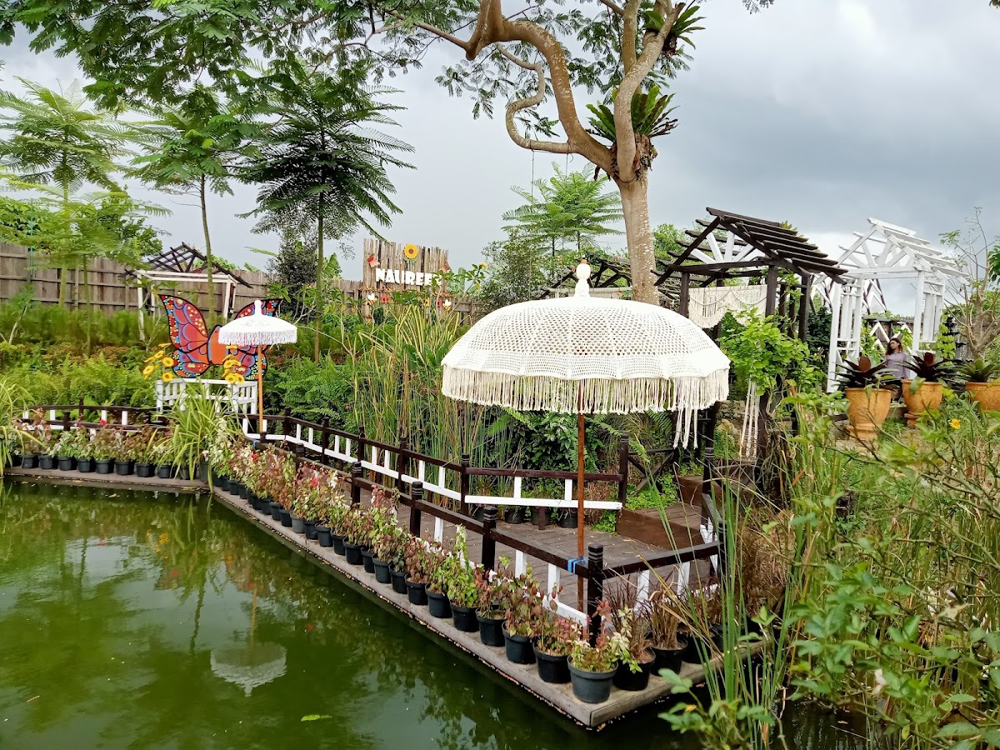
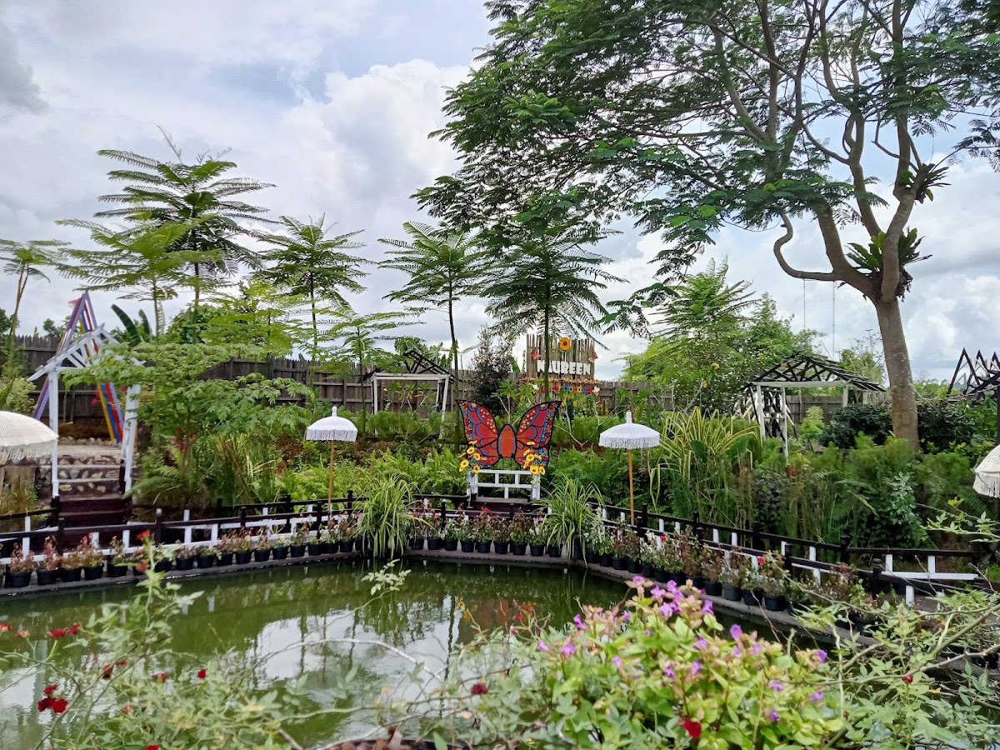
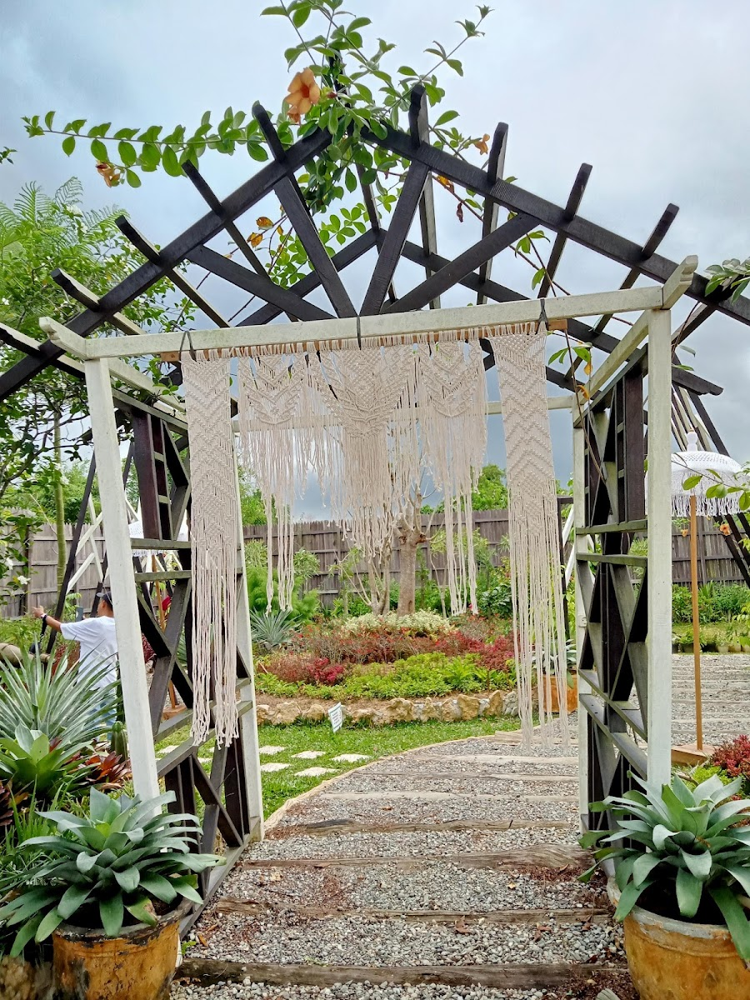
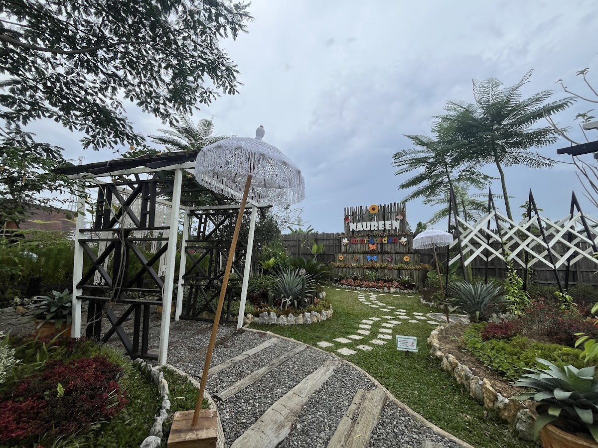
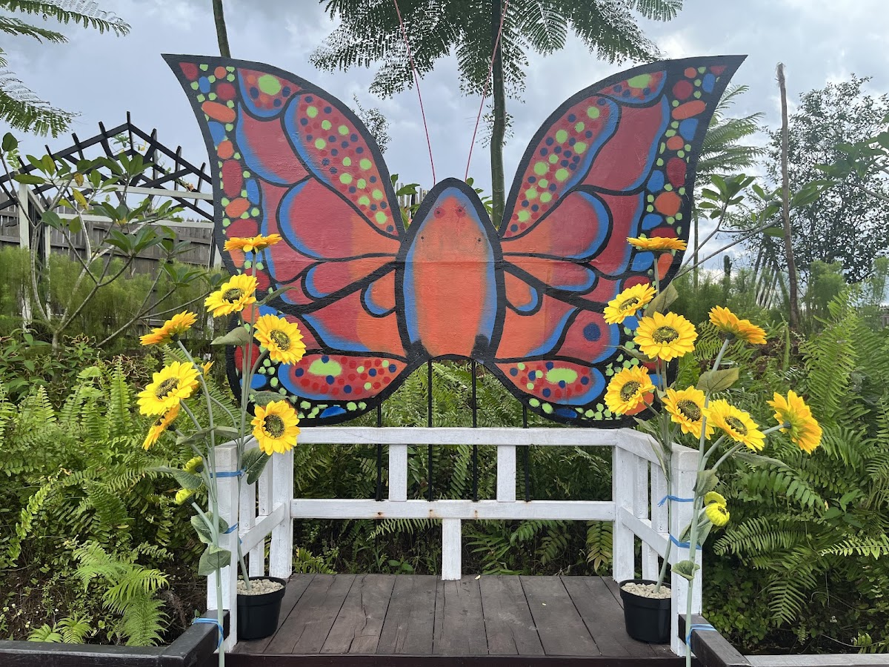
Ruang hijau · Waktu bersama
Taman tersembunyi dengan suasana alam yang nyaman untuk berlibur bersama keluarga, teman, dan sahabat.
Rp5.000 / orang · tiket masuk spot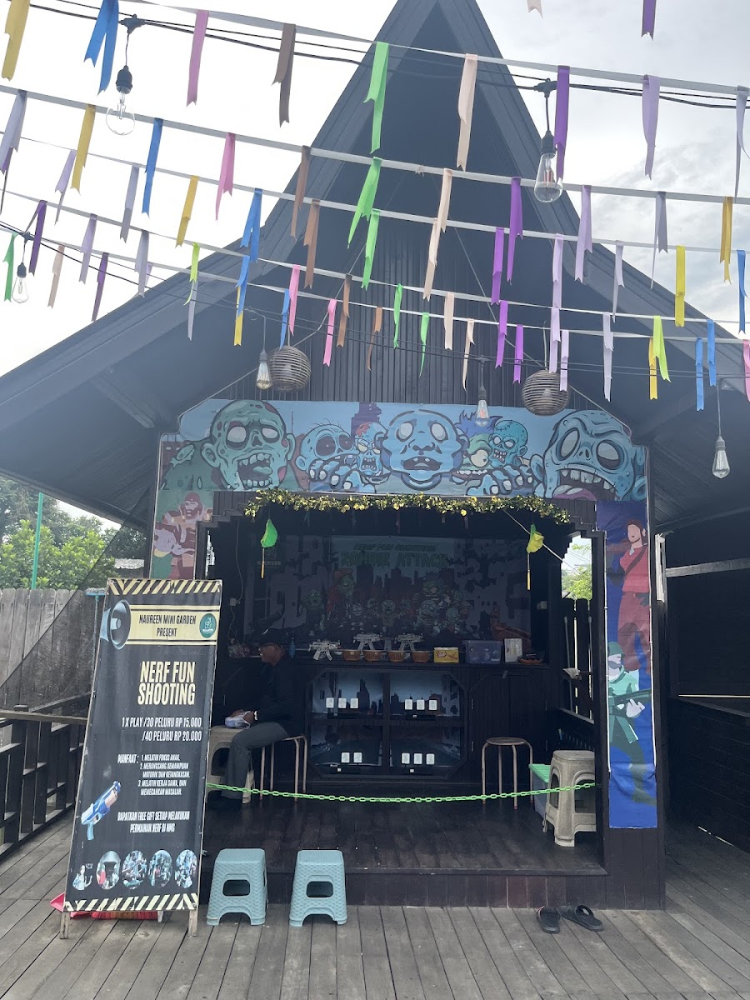
Permainan · Fokus dan ketangkasan
Permainan seru untuk melatih fokus, merangsang kemampuan motorik, dan mengasah ketangkasan anak.
05 / Sampai jumpa di sana
Siapkan kunjunganmu ke Naureen Mini Garden. Pastikan untuk mengecek informasi terbaru sebelum berangkat.
Cari di Google MapsInformasi dapat berubah. Konfirmasi langsung sebelum berkunjung.